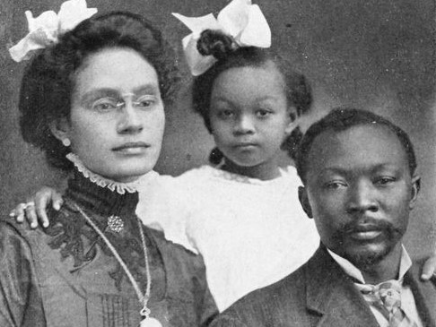
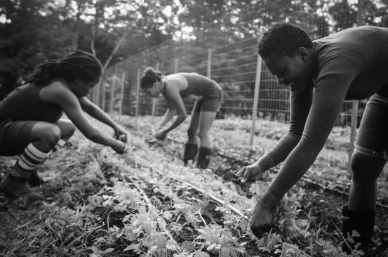

When Retha and Samwell MUNDER left their small stationery shop to their our grandmother, Pearl, in 1907,
they coudn't have predicted that she would partner with, and eventually marry, Aloysius Difflin, a gifted
calligrapher and artist. The pair went on to craft their own unique brand of paper stock, and turned a small,
black-owned business into a successful corporation.
At The MUNDER DIFFLIN Co., we're evolving, too. We're not afraid to move forward into the future,
because we take the best of the past along with us. For more than 100 years, we've followed in the traditions set forth
by our ancestors.
And we've been defying convention for as long as we've been in business.
Today's MUNDER DIFFLIN is innovating once again. After the 2010 launch of Gurch - our high-eco paper made
from 50% post-consumer waste - revolutionized the industry, we are thrilled to introduce Barsh - a light-weight, eco paper
available in over 60 rainbow-rich colors.
This year saw the introduction of Heber, made from an unprecedented 80% post-consumer waste, and Maran, our first ever
high-eco paper made from entirely renewable resources, including South African bamboo, or bamboes, grown by Fair Trade farmers, and hemp, grown in our very own hemp garden.

We may have traded a brick-and-mortar for an online shop, but the old traditions remain: earth-friendly, boutique-quality paper at affordable prices, and extradordinary service with a (cyber) smile.